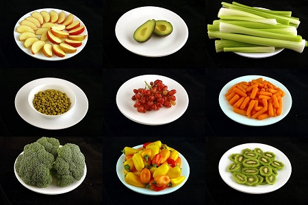
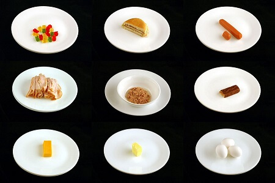

What 200 calories of each food looks like | |
|  |  |
WeightAs you can see, you would eat much more meat to get full. While you consume same amount of necessary nutritions from the vegetables, much less calories. So if you want to loose weight vegan or vegetarian life-style is the best! | |
Skin and Digestive SystemAlso, risk of getting diseases from the meat is very high even though the animal was healthy because there are some bacterias that does not affect animal but does human. So if you start to vegan most of the time, your digestive system starts to cleanse out from the dairy bacteria, hence eventually your skin will start to change. | |
You don't have to pack your food when hanging out! | |
People think you cannot hang out with your friends because you will not have anything to eat in the place that your friends are going. But the truth is now most restaurants even including barbeque places have vegan options. And yes as you might seen, vegan barbeque that you can grill just like meat one exists! | |
Deeper SleepEasy digesting is another very important and cool side of the vegan life-style. So now your stomach doesn't have to work hard to digest your food. Even if you eat late dinner, your stomach will use less energy to break down your food. When your stomach is still working hard, you tend not to sleep deeply and have unpleasent dreams. Hence if you switch to more vegetables, deep and good sleep is guaranteed. Even in the morning, your body feels lighter. | |